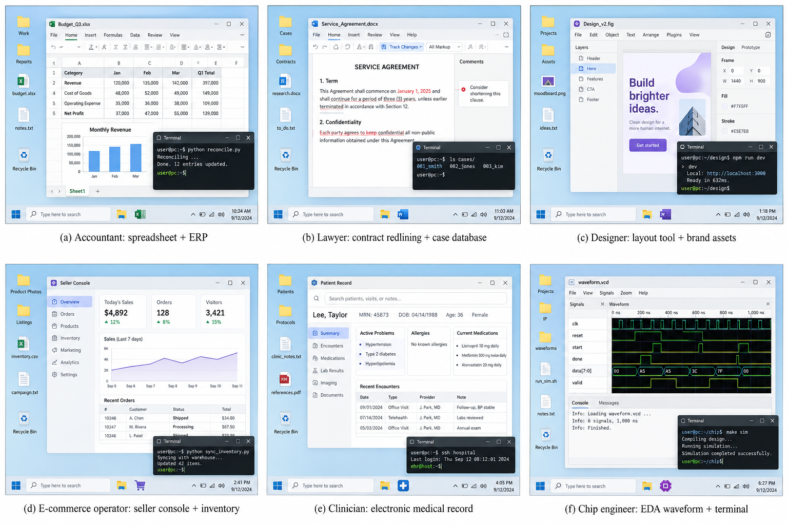

三、课题研究内容
□ 研究三（一·续）：多职业可验证环境扩展（Env Scaling）
应用
GUI
CLI

多职业个人电脑环境：会计 · 律师 · 设计师 · 电商运营 · 医生 · 芯片工程师（示意图）
① App Mock：职业业务系统仿真
以研究二的复刻能力，将 ERP、合同审阅、电商后台、病历系统等业务软件构建为可交互、可重置的仿真应用，并组装为个人电脑环境
② 真实数据驱动的环境模拟
以脱敏真实业务数据驱动状态与事件演化；事件依附业务动作，支持需求变更与跨应用协作的长程任务
③ SFT & RL 任务构造流水线
任务生成 → 轨迹采样 → 状态优先的 verifier（以数据库状态校验结果，抑制奖励利用）→ SFT 数据 / RL 奖励
闭环复用：研究一的轨迹感知评测用于度量；研究二的拒绝采样训练流程用于学习；研究一的压缩方法降低 RL rollout 开销